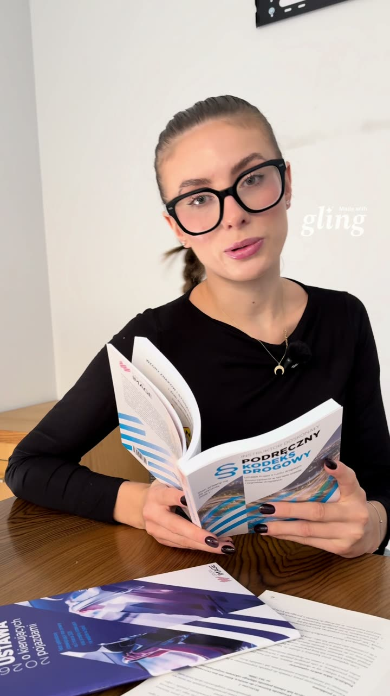

Bestsellery
MENU
Strona główna > Formularz zapisów na prawo jazdy
Krok 1.Wypełnij pola formularza, prześlemy Ci na mail szczegółowe informacje. W następnym kroku uzupełnisz informacje potrzebne do zapisu na kurs.

Instruktorka ADJ mówi, od kiedy możesz zacząć kurs i czego potrzebujesz.
Krok 2.Wypełnij formularz, potrzebujemy tych danych aby móc zapisać Cię na wybrany przez Ciebie kurs.
Krok 3.Sprawdź poprawność danych i potwierdź chęć zapisu na kurs.
Proszę o przyjęcie na kurs kat. {KATEGORIA}
Forma realizacji kursu teoretycznego: {Teoria}
Niniejszym zobowiązuje się do uiszczenia pełnej opłaty za kurs w kwocie:
{CENA_KURSU} PLN
Akceptuję regulamin Akademii Dobrej Jazdy.
Wyrażam zgodę na przetwarzanie moich danych osobowych zawartych w formularzu przez Zofia Rabsztyn Akademia Dobrej Jazdy oraz Akademia Szkoleń sp. z o.o. w celu rekrutacji na kurs. Zapoznałem się z Informacją udzieloną podczas zbierania moich danych osobowych.
Wyrażam zgodę na otrzymywanie informacji handlowych od Zofia Rabsztyn Akademia Dobrej Jazdy oraz Akademia Szkoleń sp. z o.o drogą elektroniczną. Zapoznałem się z Informacją udzieloną podczas zbierania moich danych osobowych.
Wyrażam zgodę na inicjowanie połączeń telefonicznych przez Zofia Rabsztyn Akademia Dobrej Jazdy oraz Akademia Szkoleń sp. z o.o w celu kontaktu o charakterze marketingowym. Zapoznałem się z Informacją udzieloną podczas zbierania moich danych osobowych.
Oświadczam że zostałem skierowany na szkolenie przez wyżej wymienioną firmę.
Krok 4.Wybierz formę płatności za kurs.
Możesz zapłacić gotówką lub kartą w jednym z naszych ośrodków.
poniedziałek 8:00-17:30 wtorek 8:00-17:00 środa 8:00-17:00 czwartek 8:00-17:00 piątek 8:00-17:00
poniedziałek 10:00-16:00 wtorek 9:00-17:00 środa 9:00-17:00 czwartek 9:00-17:00 piątek 8:00-16:00
poniedziałek 10:00-17:00 wtorek 9:00-17:00 środa 9:00-17:00 czwartek 9:00-17:00 piątek 8:00-16:00
PKO BANK POLSKI
PL 31 1020 5226 0000 6402 0261 0855
Akademia Dobrej Jazdy Sp. z o.o. ul. Bierutowska 1A, 51-317 Wrocław NIP 895 227 45 71
W tytule proszę wpisać imię, nazwisko, datę urodzenia oraz za co dokonywany jest przelew. W przypadku firm prosimy dodać NIP nabywcy - potrzebny do wystawienia faktury zgodnie z Dz.U. poz. 1520.
Wybranie tej opcji przekieruje cię do bramki płatności Przelewy 24 po wysłaniu podania.
Wybranie tej opcji przekieruje cię do bramki płatności ratalnej Przelewy 24 po wysłaniu podania.